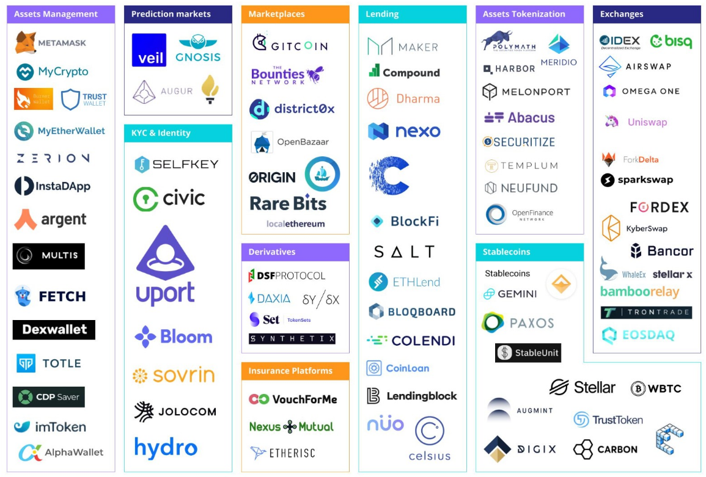
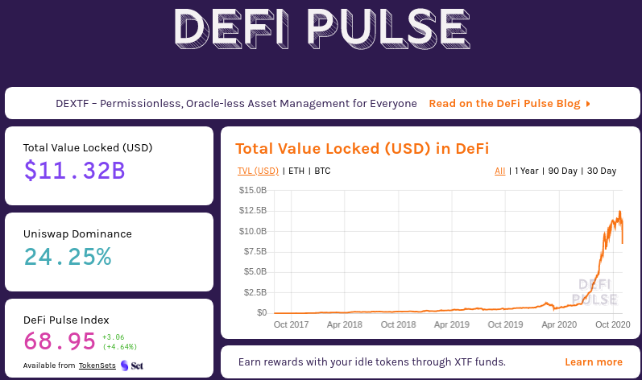
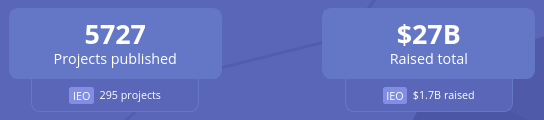
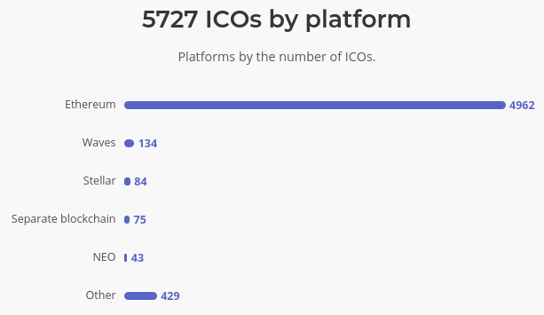
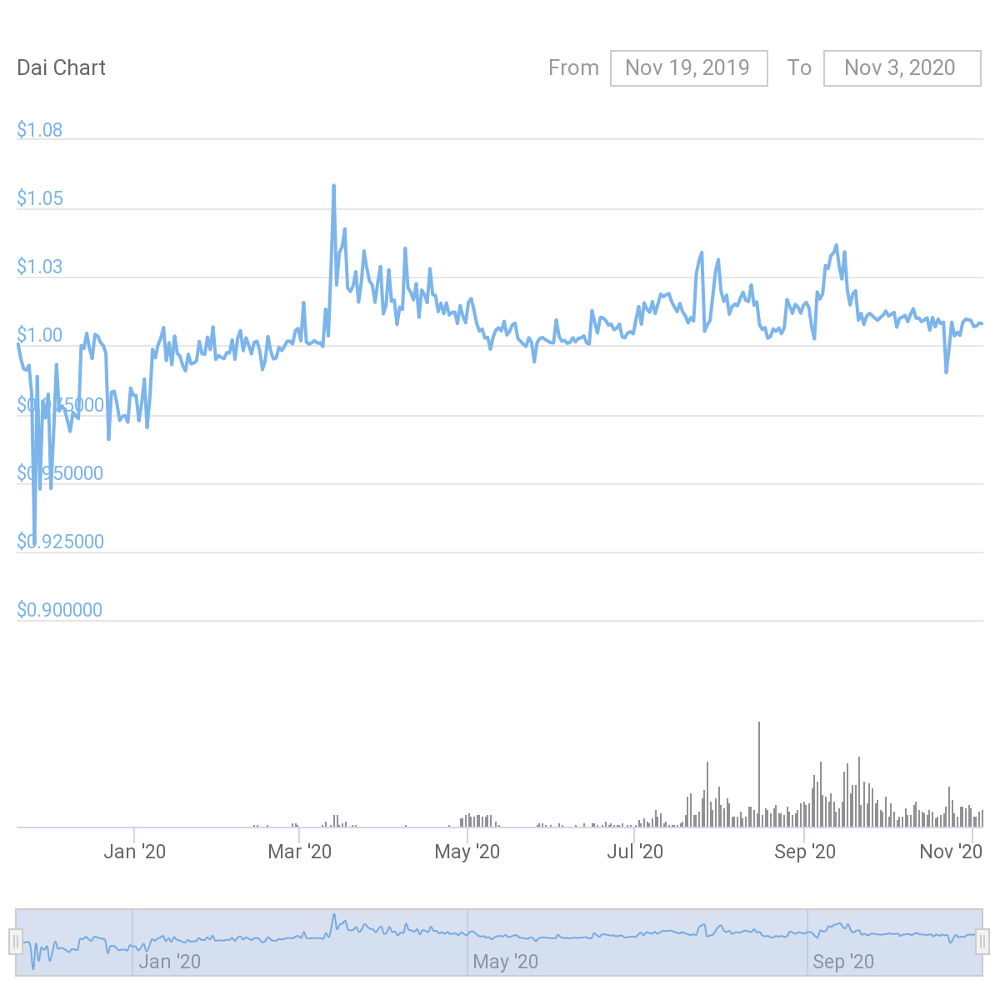
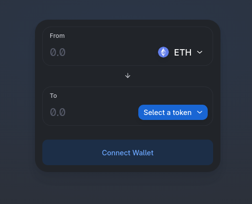
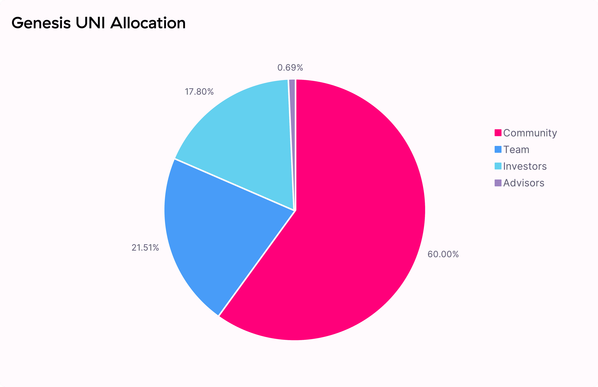
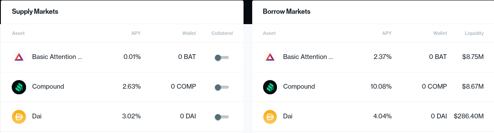
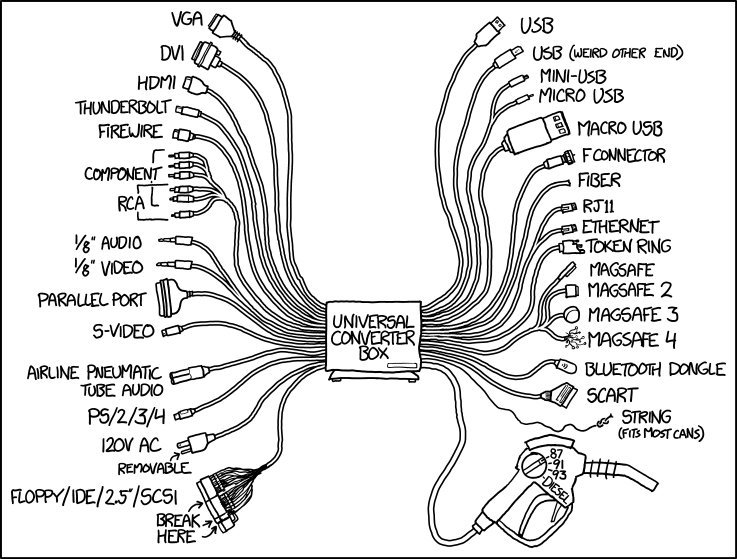
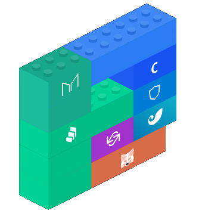

layout: true <div class="my-header"> <div id="header-left"></div> <div id="header-right">Introduction to Decentralized Finance (DeFi)</div> </div> <div class="my-footer"> <div id="footer-left">Lucien Loiseau <loiseau.lucien@gmail.com></div> <div id="footer-right">November 5th, 2020</div> </div> --- class: center, middle <div id="intro"></div> # Exploring .green[Blockchain] for Fun and Profit ## An Introduction to .green[Decentralized Finance] (DeFi) --- # .green[Lucien] Loiseau * .green[PhD] in Computer Science * currently .green[CTO] @ Nodle (world's first incentivized crowdsource IoT network) * Focus on .green[Decentralized] Network and Security * Passionate about .green[Blockchain] --- # .green[Plan] 1. What Is .green[DeFi] 2. .green[Ethereum] Blockchain 3. Initial Coin Offering (.green[ICOs]) 4. Asset-Backed Tokens and .green[StableCoins] 5. .green[DEXes] (Decentralized Exchanges) and P2P markets 6. Decentralized .green[Lending] / Borrowing 7. Conclusion --- class: center, middle # 1. What is .green[DeFi] **DeFi** is an ecosystem of .green[decentralized] financial applications, fueled by .green[Smart-Contracts] hosted on a .green[blockchain], specifically .green[Ethereum]. --- ## Not a BuzzWord <div class="hl" style="margin-top:-25px;"> DeFi is a growing ecosystem of working protocols delivering value to several thousands of users and transacting the equivalent of hundreds of millions of dollars in digital assets, every day. </div> .center[] --- ## Not a BuzzWord <div class="hl" style="margin-top:-25px;"> DeFi is a growing ecosystem of working protocols delivering value to several thousands of users and transacting the equivalent of hundreds of millions of dollars in digital assets, every day. </div> .center[<a href="https://defipulse.com/" target="_blank"></a>] --- # 2. The .green[Ethereum] Blockchain * Ethereum is a public Blockchain. Its main interface is <a href="https://etherscan.io/" target="_blank">.green[Etherscan]</a>. * .green[Smart Contracts] are self-executed contracts that enables end-to-end transactions, removing the need of many third parties such as brokers, escrow, lawyers or courts. (code is law!) * All is needed to interact with Ethereum is a .green[wallet] .center[] --- # 3. Initial Coin Offering (.green[ICOs]) : Access Tokens * An ICO is a DeFi instrument for .green[CrowdFunding]: A certain amount of token is issued and sold in exchange of cryptocurrency <br/><br/><br/> .left-column70[] --- # 3. Initial Coin Offering (.green[ICOs]) : Access Tokens * An ICO is a DeFi instrument for .green[CrowdFunding]: A certain amount of token is issued and sold in exchange of cryptocurrency <br/><br/><br/> .left-column70[] --- # 3. Initial Coin Offering (.green[ICOs]) : Access Tokens * An ICO is a DeFi instrument for .green[CrowdFunding]: A certain amount of token is issued and sold in exchange of cryptocurrency * Buyers invest in a token often with the expectation of it being a future functional unit of currency (_speculative investment_) .left-column70[] .right-column30[] -- <div class="hl" style="margin-top:0px"> An ICO removes intermediaries such as venture capitalists, investment firm, banks, and stock exchanges. </div> --- # 3. Initial Coin Offering (.green[ICOs]) .center[] <br/> .center[] .right[source: <a href="https://icobench.com/icos" target="_blank">https://icobench.com/</a>] --- # 4. .green[StableCoins] (Asset-Backed Tokens) <div style="margin-top:-10px"></div> * An Asset-Based Token is a form of .green[Digital Stock] * Each token represents an .green[ownership right] of the underlying asset * Minting and Redeeming token done by the .green[issuer] (not trustless!) .center[<img src="images/asset-backed-tokens.svg" width="75%"/>] <a href="https://digix.global/" target="_blank">cache</a>, <a href="https://etherscan.io/token/0x4f3afec4e5a3f2a6a1a411def7d7dfe50ee057bf#balances" target="_blank">contract</a> --- # 4. .green[MakerDAO] and the Dai token * The MakerDAO is a plateform that lets users take out a .green[loan] in __Dai__ * Dai supply is <a href="https://defipulse.com" target="_blank">.green[collaterized]</a> by other valuable crypto assets * .green[Trustless!] Minting and Burning purely based on Smart-Contracts Interactions * The Dai token is a StableCoin .green[softly-pegged] to USD (1 DAI = 1 USD) .left-column50[] .right-column50[] --- # 5. Decentralized .green[Exchanges] and P2P markets <div class="hl"> Uniswap is a .green[Decentralized Exchange] that allows anyone to swap tokens </div> <br/> .center[<a href="https://app.uniswap.org/#/swap"target="_blank"></a>] --- # 5. Decentralized .green[Exchanges] and P2P markets <div class="hl"> Uniswap is a .green[Decentralized Exchange] that allows anyone to swap tokens </div> .left-column50[] .right-column50[] --- # 5. Decentralized .green[Exchanges] and P2P markets * ~2B$ to 3B$ liquidity provided * Daily Trading Volume peaked ~ 1B$ (overtaking CoinBase), <a href="https://info.uniswap.org/home" target="_blank">current</a> * Only 10 employees (coinbase 1000 employees) <div class="hl"> On 16th of September, Uniswap team announced the UNI governance token. <br/>1 Billion UNI token distributed to over 50 000 addresses. </div> .center[] --- # 6. Lending / Borrowing <div class="hl"> Compound Finance is a .green[Decentralized Lending] plateform that allows anyone to borrow tokens </div> .left-column50[] .right-column50[<img src="images/compound-2.svg" width="300px"style="float:right"/>] --- # 6. Lending / Borrowing <div class="hl"> .center[about <a href="https://defipulse.com/" target="_blank">1.4B$</a> locked in compound finance] </div> <br/> .center[<a href="https://app.compound.finance/" target="_blank"></a>] --- # 6. Conclusion Traditional Finance | Decentralized Finance ------------- | ------------- .red[Lack] of unified digital identity <br/> .red[Registration] over and over | .green[Cryptographic] Identities <br/> .green[Non-Custodial] services <br/> <img src="images/ledger.jpg" width="25%" style="float: right; margin-right: 15%;"/> --- # 6. Conclusion Traditional Finance | Decentralized Finance ------------- | ------------- .red[Lack] of unified digital identity <br/> .red[Registration] over and over | .green[Cryptographic] Identities <br/> .green[Non-Custodial] services .red[Opaque] and .red[vulnerable] data | .green[Transparent], .green[Non-repudiable] <br/> --- # 6. Conclusion Traditional Finance | Decentralized Finance ------------- | ------------- .red[Lack] of unified digital identity <br/> .red[Registration] over and over | .green[Cryptographic] Identities <br/> .green[Non-Custodial] services .red[Opaque] and .red[Vulnerable] data | .green[Transparent], .green[Non-repudiable] APIs are .red[Closed] or .red[Non-standard] | APIs are .green[Open], .green[Permissionless], .green[Composable] (Money LEGOs) <br/>  